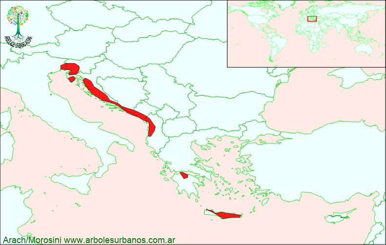

Click en las imágenes para ampliar

{kind=link}
{kind=link}
NOMBRE CIENTÍFICO : Cupressus sempervirens
FAMILIA BOTÁNICA: Cupresáceas
ORIGEN: Debido a su milenaria domesticación es bastante complejo atribuir su área de distribución natural, para algunos autores le asignan un reducido área que comprende Grecia, Turquía, Chipre . Actualmente se encuentra naturalizado en casi toda la cuenca del Mediterráneo, desde el sur de Europa, hasta la costa norte de África.
DESCRIPCIÓN GENERAL: Es una especie longeva que vive más allá de los 500 años, se citan ejemplares que superan los 1000 años. Esta conífera siempre verde presenta una copa columnar, llegando a una altura de 20 y 25 metros y hasta 50 cm. de diámetro a la altura del pecho, aunque se registran ejemplares de hasta 32 metros y un metro de diámetro. También existe otra variedad muy común y es la forma horizontalis En general se citan tres variedades que fundamentalmente varían en su forma la Piramidalis ( de forma Su corteza juvenil de l gada es de color gris, lisa y brillante, luego al madurar es marrón grisácea y surcada longitudinalmente. Su follaje está compuesto por hojas en forma de escamas que recubren todo el tallo es de color verde oscuro
ESTRÓBILOS: Los masculinos se ubican en los extremos de las ramas y son pequeñas y de color amarillo. Los estróbilos femeninos son de color verde al principio, luego cuando maduran son de color pardo rojizo o marrón, de forma esférica u ovoide de hasta 3 cm de diámetro, formados por entre 10 a 14 escamas unidas a un centro, tardan en madurar dos años y contiene entre 8 y 20 semillas pequeñas. Como la mayoría de demás cipreses sus conos son serotinos y pueden quedar adheridos a las ramas durante varios años, hasta abrirse en ocasiones de muy altas temperaturas para liberar las semillas.
Reproducción: Por lo general se multiplica por semillas, se recomienda una estratificación de un mes, pero su forma no es fastigiada, para conservar esa característica es conveniente realizar un injerto. También se pueden realizar plantas a partir de estacas recogidas en el invierno y utilizando hormonas de enraizamiento.
USOS: Esta especie tiene una madera liviana y duradera, utilizada desde hace siglos en diversos usos desde la construcción de embarcaciones y edificios, como carpintería en general. Igualmente antigua es su utilización como especie ornamental, principalmente difundido en la época del imperio romano. Por su longevidad era plantado en cercanías a tumbas y mausoleos, también era plantado en las entradas de casas, como signo de hospitalidad. Además de estos usos su resina se utilizó y utiliza como cicatrizante. Fuera de su área natural se lo utiliza mayormente como ornamental, ya sea como ejemplares aislados o formando cercos.
PAERTICULARIDADES: Es una especie muy rústica soporta muy bien las bajas temperaturas, las sequías y distintos tipos de suelos, salvo los anegadizos o demasiado salinos. Se recomienda plantarlo con pan de tierra, ya que es delicado en los trasplantes a raíz desnuda, también y sobre todo en sus primeros años se debe regar hasta que arraigue, luego el exceso de riego lo hace susceptible a pudriciones.